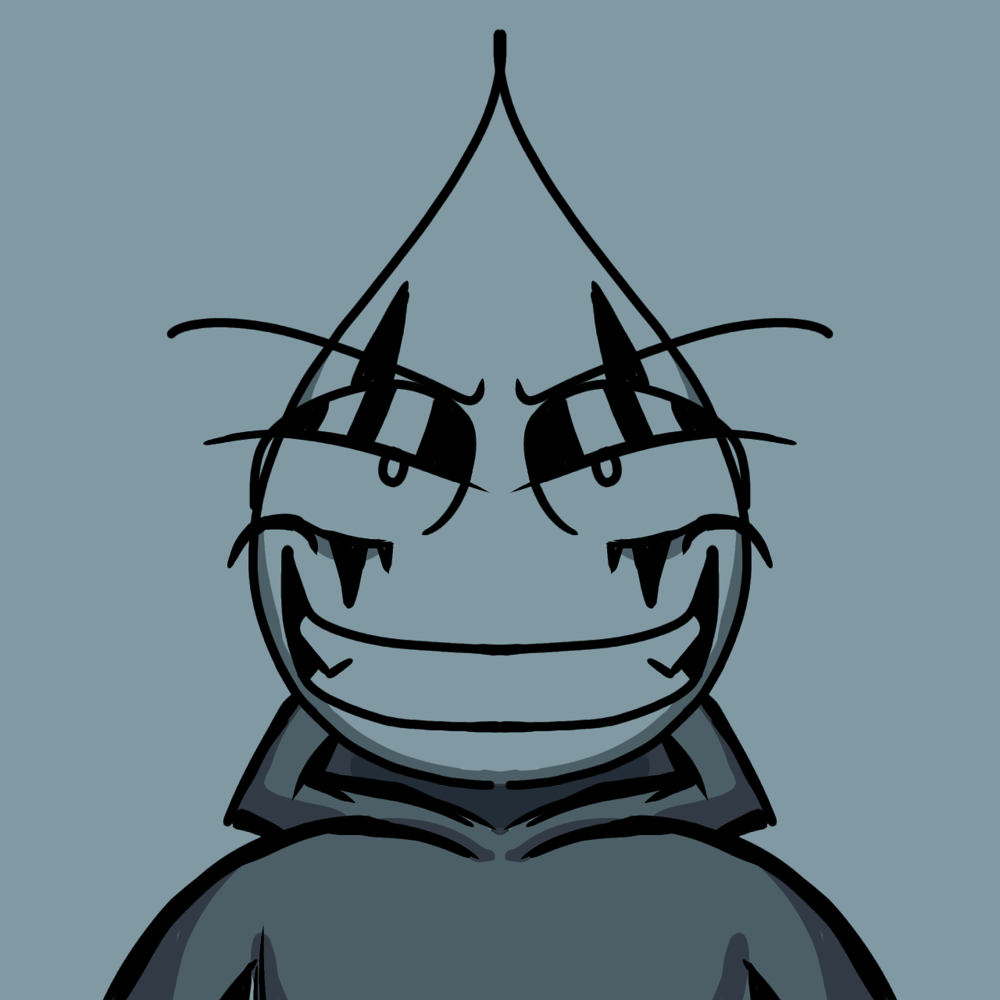
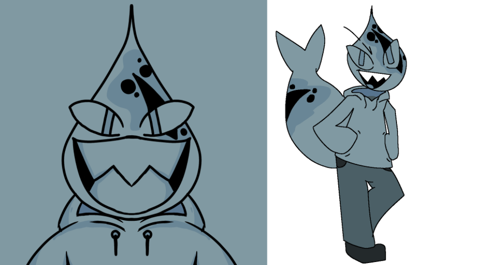
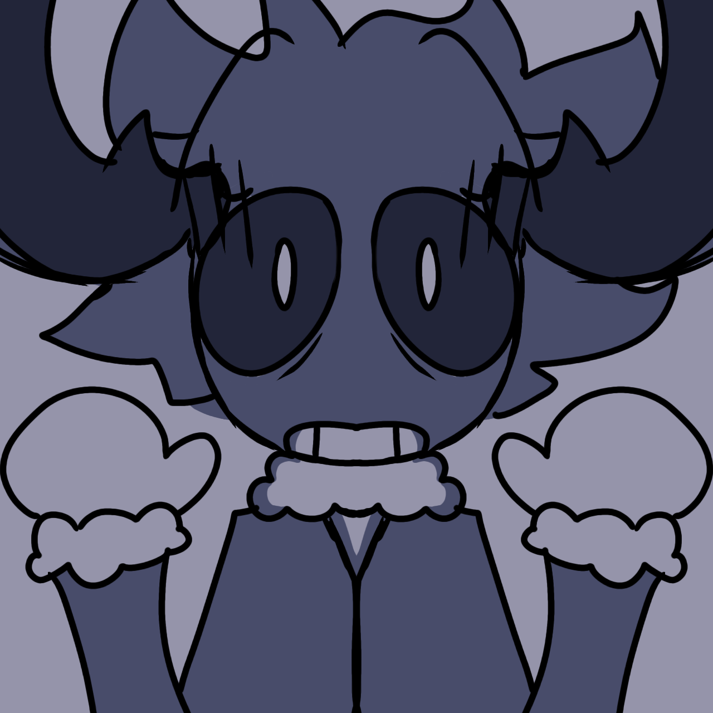

The Above image shows the Current Poster Image for One is Silver
Versus the first iteration I made! (Before Issue 1 was made)
CONCEPT ART / ADDITIONAL INFO
Augz
Augz was SUPPOSED to be a really mean character, kind of like a jerk, BUT I didn't like his old design, so I changed it, and I thought Augz would be a good protagonist instead of an antagnist, but still keeping rogue-like traits to his character.


Ember
Ember was originally THE protagonist. He still kind of is, but NOT as prevalent as before.

Seph
I used to HATE drawing him, he looked so BAD. I got used to it after a while as I got better with the characters.